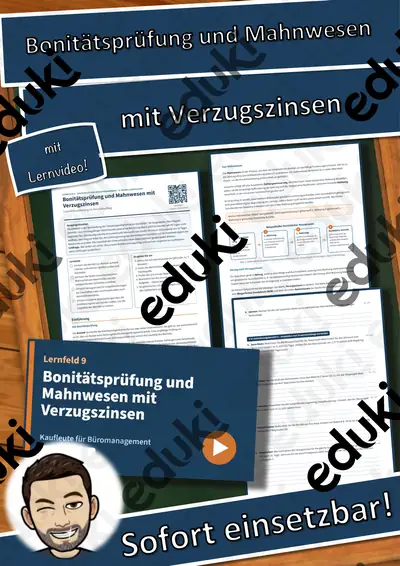
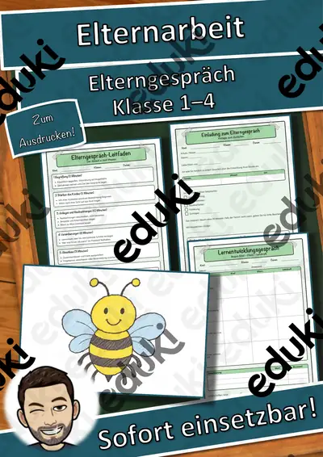
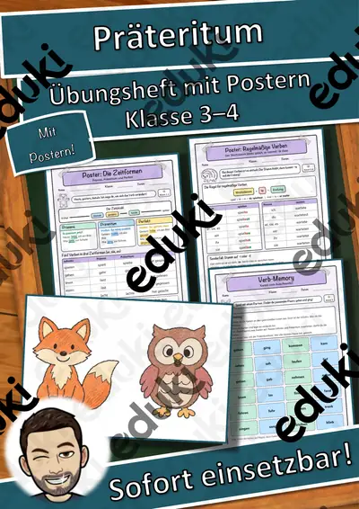
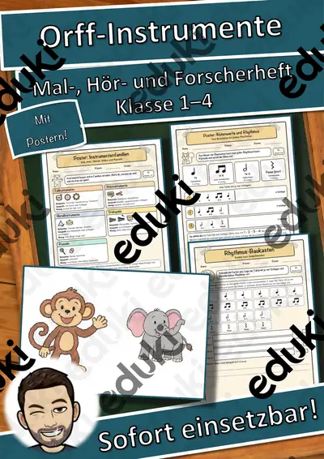
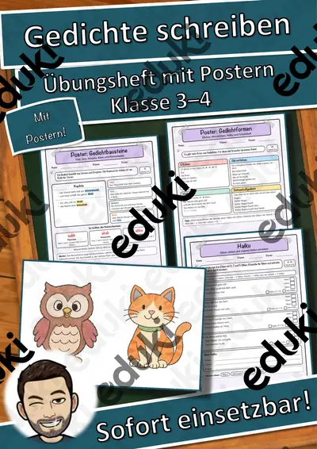
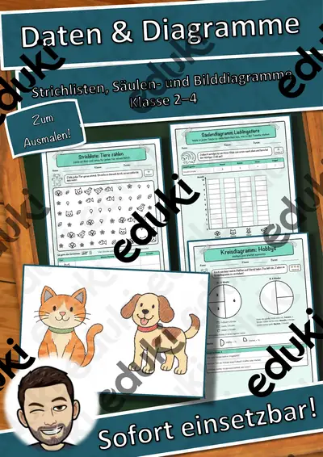
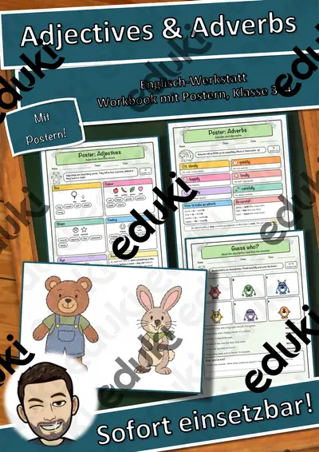
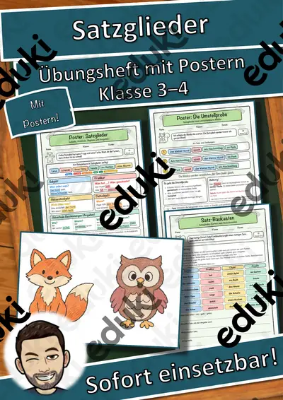
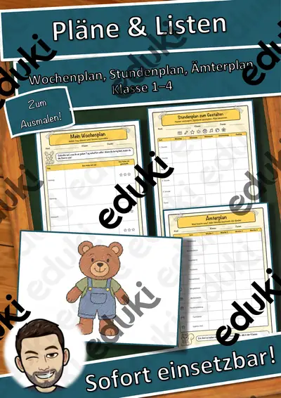

LF 1 Elektroniker/-in: Schaltpläne lesen und Stromkreise aufbauen – Übungen, Lösungen + Lernvideo

Englisch-Werkstatt: Idioms: Englische Redewendungen – kostenlos, Klasse 3–4

LF 10 Kaufleute im Einzelhandel: Gewährleistung und Garantie bei Reklamationen – Übungen, Lösungen + Lernvideo

Englisch-Werkstatt: I have, who has? Das Kartenspiel in der Schleife – kostenlos, Klasse 3–4

LF 2 Kaufleute im Einzelhandel: Verkaufsgespräch führen: Phasen und Kundenorientierung – Übungen, Lösungen + Lernvideo

LF 4 Fachinformatiker/-in: Schutzziele der Informationssicherheit und Schadensklassen – Übungen, Lösungen + Lernvideo

Englisch-Werkstatt: Tongue Teasers: Englische Zungenbrecher – kostenlos, Klasse 3–4

LF 7 Zahnmedizinische Fachangestellte: Notfallmanagement in der Zahnarztpraxis – Übungen, Lösungen + Lernvideo

Englisch-Werkstatt: All about me: Ich stelle mich vor – kostenlos, Klasse 3–4

Englisch-Werkstatt: Read and Colour: Lesen und Ausmalen – kostenlos, Klasse 3–4

English Workshop: Read and Colour: Reading Practice – free, Grades 3–4

Englisch-Werkstatt: Idioms: Englische Redewendungen – Plus-Paket, Klasse 3–4

Englisch-Werkstatt: I have, who has? Das Kartenspiel in der Schleife – Plus-Paket, Klasse 3–4

LF 9 Medizinische Fachangestellte: Endoskopievorbereitung und Darmvorbereitung – Übungen, Lösungen + Lernvideo

Englisch-Werkstatt: Don't say it: Wörter beschreiben – kostenlos, Klasse 3–4

English Workshop: Idioms: Fun English Sayings – free, Grades 3–4

Englisch-Werkstatt: Tongue Teasers: Englische Zungenbrecher – Plus-Paket, Klasse 3–4

Englisch-Werkstatt: All about me: Ich stelle mich vor – Plus-Paket, Klasse 3–4

English Workshop: I Have, Who Has? The Loop Card Game – free, Grades 3–4

Klassen-Werkstatt: Motivationsposter für die Klasse – kostenlos, Klasse 1–4

Englisch-Werkstatt: Present Progressive im Herbst – Plus-Paket, Klasse 5–6
LF 6 Verkäufer/-in: Bestellmengenplanung und Warenwirtschaftsdaten – Übungen, Lösungen + Lernvideo

English Workshop: Don't Say It: Describe the Word Game – free, Grades 3–4

Klassen-Werkstatt: Geburtstagskalender mit Urkunde und Krone – kostenlos, Klasse 1–4

LF 9 Kaufleute für Büromanagement: Bonitätsprüfung und Mahnwesen mit Verzugszinsen – Übungen, Lösungen + Lernvideo

Klassen-Werkstatt: Tagesplankarten für die Tafel – kostenlos, Klasse 1–4

English Workshop: Tongue Teasers: Tricky Sentences to Say Fast – free, Grades 3–4

Klassen-Werkstatt: Schreibpapier Lineatur 1 bis 4 – kostenlos, Klasse 1–4

Elternarbeit für Lehrkräfte – Elterngespräch, Vorlagen Klasse 1–4

English Workshop: All about me: Introduce Yourself – free, Grades 3–4

Klassen-Werkstatt: Klassenregeln-Plakate – kostenlos, Klasse 1–4

English Workshop: Idioms: Fun English Sayings – Plus Pack, Grades 3–4

Präteritum – Übungsheft mit Postern, regelmäßige und unregelmäßige Verben Kl. 3–4

Orff-Instrumente – Mal-, Hör- und Forscherheft mit Postern, Kl. 1–4

DaZ Zeit und Kalender: Wochentage, Monate, Jahreszeiten A1/A2/B1, QR

English Workshop: Read and Colour: Reading Practice – Plus Pack, Grades 3–4

Gedichte schreiben – Übungsheft mit Postern, Kl. 3–4

Wortspiele: Sag es nicht! Schule und Klassenzimmer – Klasse 2–4

Dinosaurier zum Ausmalen, Lesen und Basteln – Kl. 1–3

Strom und Magnete – Forscherheft mit Versuchen, Postern und Stromkreis-Werkstatt Kl. 3–4

Daten & Diagramme zum Ausmalen – Strichlisten, Säulendiagramme Kl. 2–4

Englisch-Werkstatt: Adjectives & Adverbs – Describing Words, Poster und Spiele, Kl. 3–4

Satzglieder – Übungsheft mit Postern, Umstellprobe, Fragen und Satz-Baukasten Kl. 3–4

Weltall & Planeten zum Ausmalen und Basteln – Sonnensystem Kl. 2–4

English Workshop: Tongue Teasers: Tricky Sentences to Say Fast – Plus Pack, Grades 3–4

Pläne & Listen zum Ausmalen – Wochenplan, Stundenplan, Ämterplan Kl. 1–4

Wortspiele: Sag es nicht! Herbst – Klasse 2–4

Soziales Lernen – Gefühle, Streit lösen, Klassenrat: Heft mit Postern und Karten Kl. 1–4
Keine Materialien gefunden – versuch einen anderen Suchbegriff oder Filter.